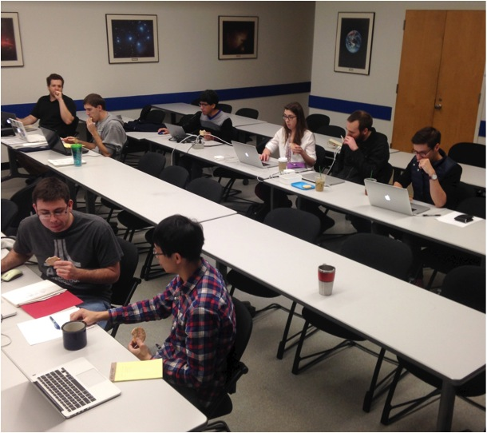

The UT Austin Astronomy Department graduate students and postdocs held their first hack day on Friday January 16, 2015. We had 10 attendees and worked on 5 different projects. This post summarizes the motivation, project outcomes, and lessons learned from our first experience.

Motivation and format
Stefano Meschiari and I came up with the idea to host an astronomy hack day at UT Austin. Stefano and I had recently attended international astronomy hackathons in the last year- Stefano at .Astronomy and me at SPIE and Astro Data Hack Week. We agreed that hackathons were really fun and productive.
A hack day consists of collaborative focused work effort, typically on a computer coding project. Ideas are pitched at the beginning of the day. Self-assembled teams work together with limited time to achieve a common goal. At the end of the hack day the teams present their product. Above all, a hack day is useful to learn from our colleagues, and maybe create something novel that could not have emerged without the confluence of skills unique to the people in the room.
Preparation
We picked a date after the winter AAS meeting but before classes had resumed for Spring semester. This academic doldrums offered the most flexibility in reducing conflicts with classes and reserving a room all day. All postdocs and graduate students were invited. We did not include faculty in the email invitation, although this was not necessarily by design. Several Department members expressed regret about being out of town. A few weeks before the hack day, I set up a GitHub wiki where Department members could identify themselves as participants, and view or add hack ideas. Ultimately ten people added themselves to the participants list, and six people edited the ideas list. The only day-of preparation was getting extension cords.
Hack Day
Ten people showed up in the morning for the pitches. After the pitches, the participants splintered in to 5 groups of one to three people.
Robust spectral inference for IGRINS data Michael Gully-Santiago, Andy Mann, and Kevin Gullikson worked on implementing robust inference of IGRINS infrared stellar spectra with the new Starfish code. The first challenge was package management. Migrating to Python 3.3 was made easy with anaconda, but none of us had Julia installed on our laptops, and our HDF5 inexperience was a barrier. We spent a while navigating the Starfish dependencies and examples, and patching hard-code. The main challenge was setting up the stellar model grids with HDF5. Our effort culminated in a Skype call with the author of the code, Ian Czekala. Ian was appreciative that we were testing out his code, and we were jazzed to get insight straight from the source. We talked about his paper, the code, and future improvements. We realized many of the existing issues would prevent us from running the code by the end of the hack day, but we started a useful dialog and potential collaboration. One major accomplishment of the Skype call was that we realized we would ultimately need access to a high performance compute cluster to run the code on the dozens of IGRINS echelle orders. I got IGRINS PI Dan Jaffe to request a start up allowance of 50,000 SU’s on Wrangler from the Texas Advanced Computing Center (TACC). The request was approved in mere hours, and we started to configure the dependencies and navigate the Wrangler tech support. For instance, Python 3.3 is not currently supported on Wrangler, but the anaconda Python distribution comes with MKL optimizations. Was this satisfactory? Since the hack day I wrote a memo to TACC to explain the project needs.
Spectral continuum estimation Kyle Kaplan and Yao-Lun Yang worked on automatic continuum estimation for spectral analysis. Their applications differed, but their needs were similar. Kyle needs to normalize IGRINS echelle orders, while Yao-Lun needs to fit Herschel data. Kyle and Yao-Lun summarized their progress at the end of the day.
Documentation for Systemic Greg Mace used Stefano Meschiari’s existing code, Systemic, to model orbital dynamics for radial velocity data. Stefano aided Greg and improved the documentation in situ.
Natalie Gosnell and Greg Mace worked on improvements to the IGRINS pipeline, including easy output of normalized IGRINS spectra to ASCII files to facilitate data sharing.
Stefano Meschiari used the SAO/NASA Astrophysics Data System’s “ADS developer API” to query ADS.
Ivan Ramierez used Bokeh to make interactive in-browser visualizations.
Other attendees included Casey Deen (MPIA), who worked on his code Moog Stokes.